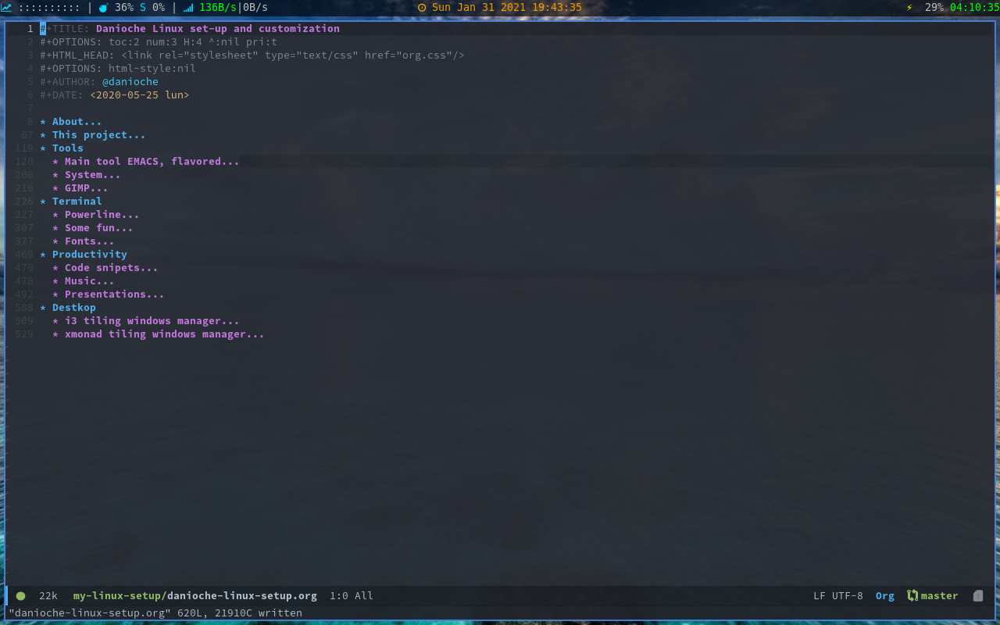

Danioche’s geek org-blog
1 M
Documenting my personalization on linux
I will share with you the approach of one project that I’m working on it several months. The projects is aimed to document the personalization of my linux environment that took (and takes) me a great amount of hours. The feel of owning the system is essential for feeling good working, coding, or just enjoing browsing.
Common problems are because I’m a little bit of distro-hopping user. I like to change/tests new distros and that makes me lost some configuration and .files on the process.
So the goals are:
- Control, on changes and versions made
- Document, how it is configured/personalized
- Automate, the configuration and tools easily
How I’m dealing with this?
I followed the approach on splitting the problem in thouse 3 main issues:
Control
The best way on controlling the project is to use a repository on git, this is far known and it will help to create branches for “distro dependency”.
Also “versioning” makes a lot of sense when developing changes on “dotfiles”.
Document
The use of literate programming with org-mode is how I solved the problem on having a consistent documentation.
Automate
Using literate programing I can automate some configuration dot files to create, copy, modify the configuration files once the code-block is executed by the user allowing user to execute as wish the code blocks.
The project and some final conclusions
Finally the project is under review in a private repository at this moment I don’t see it completed to be shared with you, but I will explain here the main sections:

Figure 1: Main sections of the project - from Org file
2 How to deobfuscate CSS
I found a very quite simple process to deobfuscate CSS files This is simple, if the CSS is not linked to any page, just link it in the HTML and open the .html file on Firefox and open CSS inspection with Developers tools (F12).
Copy all the contents and paste it on a new file, now you have a readable CSS to work on.
Cheers.
3 Minimizing the blog concept
This is one of the main principles of this blog: to avoid bloated meta-information just to support content.
This inspiration comes from the every-day-use of Emacs during several projects in which I mostly integrate my personal workflow with professional workflow with Emacs.
Whata are the thoughts behind this blog then:
Minimize the no-information data
In other words, every bit of information that you could download visiting this blog is needed for reading the content in proper way, the presentation layer info is minimal.
Post everywhere
Once data is minized then the process of publishing is also faster and lightweight, this would allow me to mainly post with any GPRS connection sharing WiFi from my mobile on-the-go.
Trolls safe
Trolls and Heaters are not wellcome, they are needed in www just because is human-nature, but avoiding the extra expossure on the Social Media this content is kind-of trolls-free, only will be visited (if so) by people interested, at least I hope so… (this is a trolls calling? maybe, inet usually works opposite as expected).
4 Revisiting your own code
Almost two weeks ago I received a call for a good friend of mine, and also owner of an Hardware Store, those kind of familiar SMEs that are commited to survive through the years thanks for the every effort and their commitment to the service more over than the product.
Returning to the point, I developed an small Web Application for managing the Hardware Store, very basic: Customers, Products, Categories, Billing, and so. That was on 2004, long time ago, the main porpuse of the project was to migrate from the previous software installed (MSDOS based, yes!). So I suggested to move to Server-Client capabilities with Web based system, due the lack of resources of the server I also suggested to go simple with alrady purchased software: Windows XP Pro. So you get the idea, IIS, ASP Classic (at these time I was starting .net but I was more handy with PHP, ASP and so,…). The thing is once you see the old-fashion code I was feeling with a mixture of shame and pride.
4.1 The Spaggetti-code times
The main problem those days was how to avoid the spaggetti-code, how to separate the layers to avoid coupling on logic and presentation. That was the first thing I remembered when I was revisiting the code. I remembered my self trying to solve the puzzle of creating the HTML structure on the fly reading the objects from the database. That was inspired by previous projects and common problems faced but I felt kind of proud from my past me.
4.2 The include file
Of course also the approach was to separate the business logic from the functionality / controller that was also included in the project, the only thing is that all the controlled was included in one library making the class complexity very high.
4.3 The Documentation and code style
Another thing that I’m very proud of is the documentation included in the main class. Is well structured and aimed to be used and maintained. Cool. The documentation skills is something that I’m working on improving a lot.
4.4 Final thoughts
The exercise of revisiting your own code is a good practice to see what have you learned and what you should keep working on. I see it like a retrospective on the evolution of yourself as a coder. This was because my friend need several modifications and I realized that a 17 years old code was telling me some history about myself.
Try it yourself, you may find some take aways from the exercise.